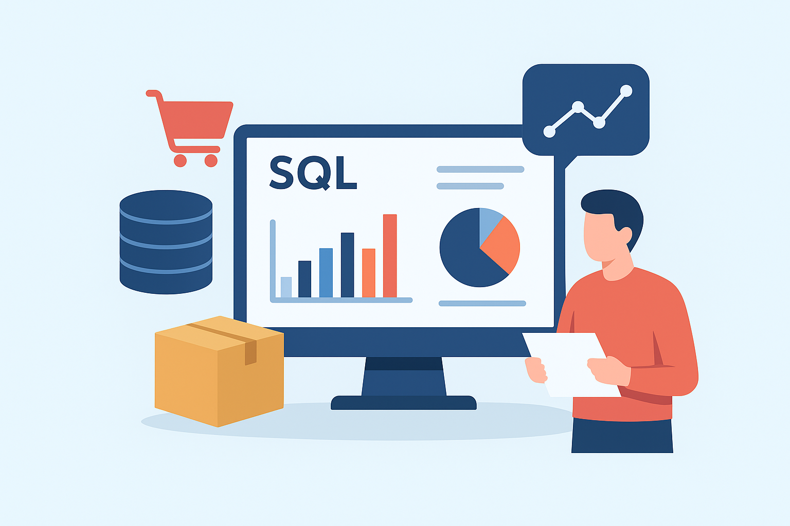
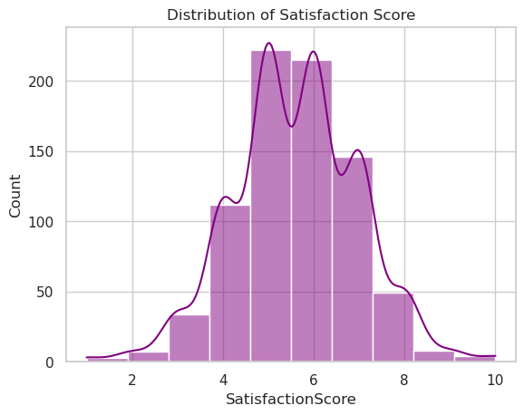

Charles Maina Portfolio
Data Analyst | Statistician
Turning raw data into actionable insights that drive smart decisions.
Skilled in Python, SQL, Excel, and Power BI, I specialize in transforming complex datasets into clear, impactful stories.
Open to remote and data-focused opportunities where I can deliver value through analytics and visualization.
About Me
I’m Charles Maina, a passionate Data Analyst and Statistician with over three years of hands-on experience in
data analysis, statistical modeling, and reporting. I turn complex datasets into clear, actionable insights that help
businesses make informed and impactful decisions.
I’m skilled in Python, SQL, Excel, and Power BI, and I enjoy exploring how data can solve real-world challenges — whether
it’s optimizing processes, uncovering trends, or guiding strategy. My work combines analytical rigor with creative storytelling to make
data understandable and valuable to everyone.
Beyond technical expertise, I value curiosity, continuous learning, and collaboration. I’m currently open to data roles
and projects where I can contribute to data-driven growth and innovation.
Skills and tools
Here’s a snapshot of the tools and technologies I use to analyze, visualize, and manage data effectively:
Programming
Python (Pandas, NumPy, Matplotlib, Seaborn), SQL
Data Visualization
Power BI, Excel, Matplotlib
Database Management
MySQL, PostgreSQL
Version Control
Git & GitHub
Other Tools
Jupyter Notebook, Google Sheets, VS Code
Professional & Soft Skills
Beyond technical expertise, I bring strong analytical thinking, adaptability, and communication skills that help me collaborate effectively across teams and deliver data-driven insights with clarity.
Analytical Thinking
Ability to interpret data objectively and uncover trends that inform better decisions.
Communication
Skilled at presenting complex data in clear, actionable language for diverse audiences.
Problem Solving
Driven by curiosity to identify patterns, inefficiencies, and opportunities for improvement.
Collaboration
Experience working with cross-functional teams to align analytics with organizational goals.
Adaptability
Comfortable learning new tools, adjusting to changing priorities, and embracing feedback.
Projects Overview
I develop data-driven solutions that turn raw information into actionable insights.
My projects focus on data cleaning, business intelligence dashboards,
and exploratory data analysis using tools like Python, Power BI, and Excel.
Each project reflects my passion for uncovering trends, improving efficiency, and supporting better decisions
through data visualization and storytelling.
Below is a selection of my featured projects, demonstrating my ability to clean, analyze,
and visualize data effectively across various domains — from sales analytics and customer service
to sports data preparation.

Tools: Power BI, Excel
An interactive Power BI dashboard analyzing global coffee sales and customer behavior. The dataset was cleaned and standardized in Excel, then visualized to highlight key performance trends across regions, roast types, and coffee varieties.
- Data Cleaning: Handled missing values, standardized roast types, and unified date formats.
- Analysis: Created DAX measures to compare revenue and performance across countries.
- Insights: Light roast generated the highest revenue; Arabica was the most popular coffee type globally.

A Power BI dashboard developed to analyze call center performance metrics and customer satisfaction. The project aimed to improve agent efficiency and identify service bottlenecks through data visualization.
- Tools: Excel, Power BI
- Data Preparation: Converted timestamps and CSAT scores into standardized numeric formats.
- Visualization: Tracked key metrics — call duration, agent performance, and peak hours.
- Insights: Identified top-performing agents and discovered that most customer calls occurred during mid-week mornings.
A Python-based project focused on cleaning and preparing messy cricket datasets for analysis. It demonstrates efficient handling of missing values, duplicates, and inconsistent data entries to produce analysis-ready data.
- Tools: Python (Pandas, NumPy)
- Data Cleaning: Handled missing values, removed duplicates, standardized column names.
- Feature Engineering: Created derived columns to analyze player and match performance.
- Outcome: Delivered a clean, structured dataset suitable for advanced analytics.

Tools: MySQL, Power BI
Analyzed and visualized HR data to uncover insights about employee demographics, tenure, turnover, and departmental performance.
Cleaned and preprocessed datasets using SQL, explored employee demographics, calculated tenure, turnover rates, and created interactive Power BI visualizations.
- Identified high-turnover departments and employee distribution patterns.
- Calculated average tenure and employment length for terminated employees.
- Generated actionable insights to support HR decision-making.

Data analysis project exploring customer satisfaction across different regions, age groups, and genders.
Includes exploratory data analysis, visualizations, and statistical tests (T-test, ANOVA, Chi-square) to identify patterns and insights in customer satisfaction using Python (Pandas, Seaborn, Matplotlib)